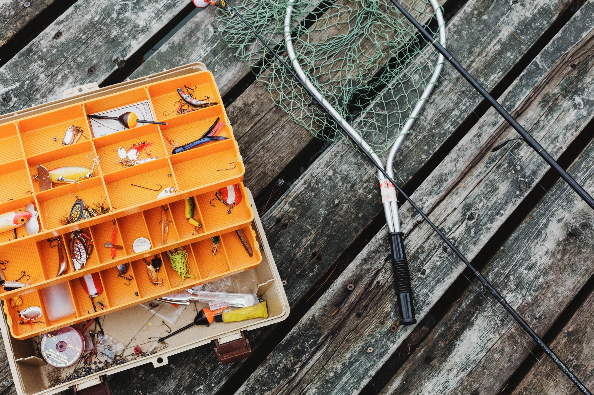

FshnPro
FshnPro was establsished 1998, and in our website you will be able to find fishing gear. The fishing gear will be baits, tackle, rods, boats and more. You can also find maps on our website to see the fish in your area, the water level and temp aswell as the weather conditions. Go to our real life locations
In our boat sections you can find many different brand to fit your likings. we have pontoons, trackers,speed boats, four strokes, bass trackers and more You can get amazing deals on our boats for up to 40% off.
Our rods are in everyones price range, we have rods going for 40$ or less and 100$ plus. we have different brands and designs. we also have recamondations on the species you're targeting, we have all sizes, the sizesrange from 1 to 50 with 50 being the biggest. The more you shop on our website or real life locations you can save up points for crazy discounts on any item.
in our baits and lures section we have an endless amount but our most bought are worms like senkos or a texas rig,
in our utilities we have angler bait knives, tackle boxes, nets, coolers and clothes for any weather such as winter, rain, and heat. The tackle boxes come in all sizes and colors so you can have the perfect one for you. As for clothes and boots we have camo to blend in with your surroundings, then thin or thick depending on the weather you choose to fish in. Then the knives and nets they come in all sizes too, there is bait knives and filet knives then in the net area you have cast nets, or landing nets, any size
let me tell you why you should get some of our tech here at fshn pro. our tech here is built to find things that humans are not capible of, like maybe other stores have fish finders that scam the water below you. But our tech can do more, for instance it can scan under water then it can we have under water cameras that you attach to the boat. It scans for fish and stuff in that can be in the way or harmful in some way. It also checks temputure, weather, water levels and species of fish for the lake that your located in.

Here at FshnPro we have world record lures!! Over 100 of glide baits that we have sold have caughten 10-15 pounds, GARENTEED!